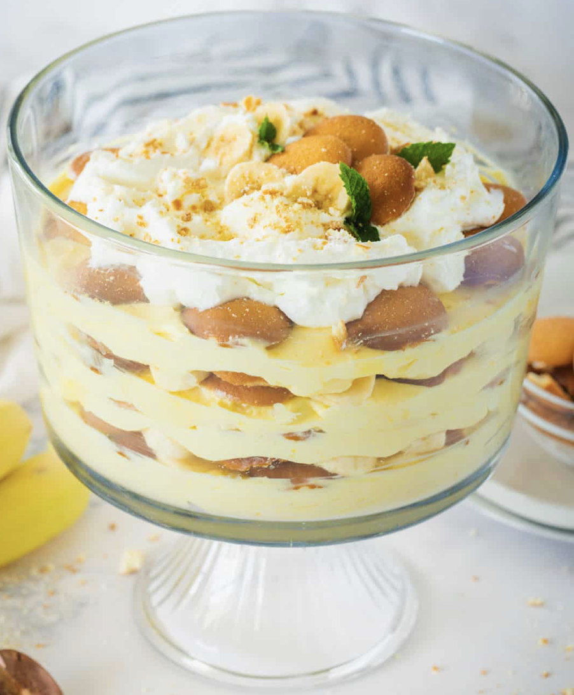

Banana Pudding:

Description
Banana pudding is a delicious and refreshing dessert. If you love bananas, pudding, and cookies, then this is the dessert for you! It doesn't require any baking, looks beautiful, and is easy to make.
Ingredients
- Milk - You can use whatever milk you have on hand, we used whole milk.
- Vanilla pudding - You want to be sure to use INSTANT pudding that doesn’t require cooking. We used vanilla pudding but a banana flavor will work just fine.
- Vanilla extract - Homemade Vanilla adds the best flavor to the pudding.
- Sweetened condensed milk - Enhances the creaminess and sweetens the pudding.
- Vanilla wafers - We love the Nilla wafers brand, but you can use your favorite. See substitution options below.
- Heavy whipping cream - The whipped cream adds richness to the pudding.
- Powdered sugar - is added to sweeten the top layer of the pudding. You can leave it out completely.
- Bananas - The fresh banana slices are what give the pudding its amazing flavor.
Steps
Prepare Pudding:
- In a large bowl, beat the cold milk with vanilla and pudding until it thickens. Beat in condensed milk.
- In a separate bowl, beat the heavy whipping cream until fluffy with stiff peaks. Use a spatula to gently fold 2/3 of the whipped cream into the pudding.
- Add the powdered sugar into the remaining whipped cream and beat to combine, refrigerate until needed.
Assemble:
- Add about 1/4th of the vanilla wafers into the bottom of your trifle bowl and about 1/4th of the bananas. Spread 1/4 of the pudding over the bananas/wafers. Repeat with remaining layers.
- Add the remaining whipped cream to the center of the pudding and decorate as desired. Cover and refrigerate for two hours then serve.
Make-Ahead
For best results, Banana pudding can be made up to 24 hours ahead and leftovers should be enjoyed within 2 days of making it. If making the pudding more than two hours in advance, keep the bananas completely covered by the pudding as they will brown if you don’t. Then just add fresh slices of bananas on top when serving.
Serving Ideas
The easiest way to serve this is with a large serving spoon and just scoop out portions. You don’t have to serve the pudding in a trifle bowl. Here are some other great ideas to serve the vanilla pudding:
- In jars or mini cups – just pipe with a bag for a cleaner look!
- Casserole – Add to a baking dish, round, square or 3 qt rectangle will all work.